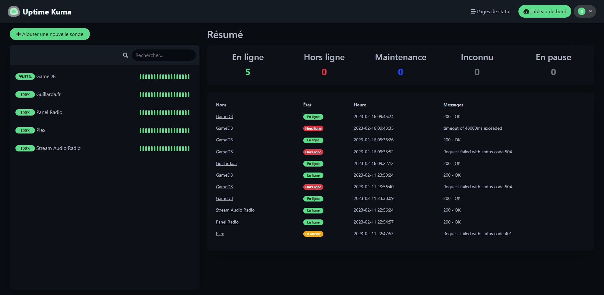

Donc parlons D'Uptime Kuma, pour faire simple et vous expliquer brièvement ce qu'est Uptime Kuma, et bien c'est une interface Web tournant sous Docker qui vous permet de mettre des Sondes (c'est comme ca que c'est appelé dans Uptime Kuma) sur par exemple des sites que vous hébergés ou tout autres services ca peut etre des requetes HTTP(S), des Ping sur des IP, etc..., et je trouve personnelement que c'est super simple a mettre en place, personnelement je l'ai installé pour pouvoir avoir une page de status comme plein de services ont mais aussi surtout pour les alertes car vous pouvez configurer des altertes dessus qui envoie soit un Mail, un SMS, un message sur Telegram, un message sur Discord, fin bref encore une fois pleins de possibilités pour vous prévénir qu'un de vos services est down, encore une fois c'est super simple aussi a mettre en place en quelques clics les alertes sont configurer
Voici l'interface d'Uptime Kuma :
C'est plutot simple je pense que rien qu'en voyant l'interface vous êtes capable de comprendre le fonctionnement
Je vous laisse le projet Github juste la vous pouvez aller y jeter un oeuil : https://github.com/louislam/uptime-kuma
Et pour ce qui est de ma page de status que je parlais au tout début elle est juste ici : https://status.guillarda.fr/